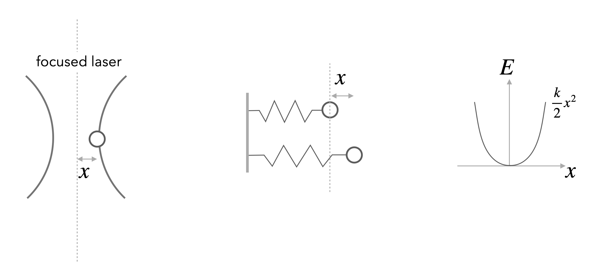
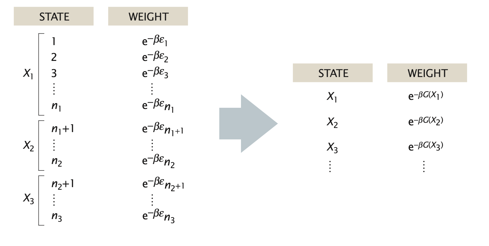

Equipartition
Contents
This page was generated from notebooks/L3/1_Equipartition.ipynb.

Equipartition#
The statistical physics of a system is particularly simple when the total energy only depends quadratically on the dynamic variables, e.g. the positions of particles or the length of a polymer. As we discuss below, the simplification comes from the fact that evaluating the partition function merely involved carrying out Gaussian integrals, which can be done analytically.
The equipartition theorem, also known as the law of equipartition, equipartition of energy or simply equipartition, states that every degree of freedom that appears only quadratically in the total energy has an average energy of \(\frac{1}{2}k_B T\).
Consider one degree of freedom for a monoatomic gas. This degree of freedom is the kinetic energy of one atom along the x-direction, which is given by
\begin{equation} E=\frac{p_{X}^{2}}{2 m} \end{equation}
According to the Boltzmann distribution, the probability to find an atom with a certain momentum is given by
\begin{equation} P\left(p_{x}\right)=\frac{\mathrm{e}^{-\beta\left(p_{x}^{2} / 2 m\right)}}{\sum_{\text {states }} \mathrm{e}^{-\beta\left(p_{x}^{2} / 2 m\right)}} \end{equation}
We can calculate the denominator, which is the partition function \(Z\), by summing up (or integrating when going to continuous states) over all possible momenta
\begin{equation} \sum_{\text {states }} \rightarrow \int_{-\infty}^{\infty} \mathrm{d} p_{x} \end{equation}
This yields
\begin{equation} Z\equiv\int_{-\infty}^{\infty} \mathrm{e}^{-\beta p_{x}^{2} / 2 m} \mathrm{~d} p_{x}=\sqrt{\frac{2 m \pi}{\beta}} \end{equation}
A simple but frequently used trick shows that the mean energy (like many other thermodynamic averages) can be obtained as a derivative of the logarithm of the partition function:
\begin{equation} \langle E\rangle=\frac{\int_{-\infty}^{\infty} \frac{p_{x}^{2}}{2 m} \mathrm{e}^{-\beta\left(p_{x}^{2} / 2 m\right)} \mathrm{d} p_{x}}{Z}=-\frac{\partial \ln Z}{\partial\beta}=\frac 12 k_\mathrm{B}T \end{equation}
This is the mean energy per degree of freedom. One can show that each degree of freedom, independent of the object (atom, colloid, parking car) is carrying this mean energy.
A good example for a non-quadratic degree of freedom is the barometric height formula with a potential energy that is linear in position.
Equipartition is useful in many ways. The fundamental degrees of freedom, e.g. the vibrations of a single molecule are quadratic in the bond length. Similarly all rotational degrees of freedom are as well. Their occupation is determined by a Boltzmann distribution and readily visible in molecular spectra. On more macroscopic scales it is very useful in the field of force measurements using optical tweezers.
Example: Position of a Bead in an Optical Tweezer
In an optical tweezer, a polarizable object (e.g. a polymer bead) is hold in the intensity gradient of a focused laser beam. The nearly Gaussian intensity distribution of a focused beam leads, in first approximation to a linear force a parabolic potential and can be employed to measure tiny forces.
For one dimension of the 3D optical potential it can thus be written as
\begin{equation} F=-k x \end{equation}
and
\begin{equation} E=\frac{1}{2}k x^2 \end{equation}
Using the Boltznmann distribution for the potential provides the probability distribution for finding the particle at a certain position \(x\)
\begin{equation} p(x)=\frac{1}{Z}\exp\left(-\frac{kx^2}{2k_B T} \right) \end{equation}
which resembles a Gaussian distribution with a variance of
\begin{equation} \sigma^2=\langle x^2 \rangle =\frac{k_B T}{k} \end{equation}
We also readily recognize that the partition function \(Z\) is the normalization factor of the Gaussian
\begin{equation} Z=\sqrt{2\pi }\sigma=\sqrt{2\pi\frac{k_B T }{k}} \end{equation}
The mean potential energy is then calculated by
\begin{equation} \langle E \rangle =\int_{-\infty}^{\infty} E\, p(x)\,dx=\frac{1}{2}k\int_{-\infty}^{\infty} x^2 p(x)dx=\frac{1}{2}k \frac{k_B T}{k}=\frac{1}{2}k_B T \end{equation}
With the help of the variance of the distribution mentioned above, we also recognize that the trap stiffness can be obtained by dividing th ethermal energy \(k_B T\) by the variance of the positional fluctuations.
\begin{equation} k=\frac{k_B T}{\langle x^2\rangle } \end{equation}
The second degree of freedom of a particle in an optical tweezer is given by its velocity \(v\). This is as well a quadratic degree in \(v\), yet its measurement turns out to be tricky. As the particle is carrying out Brownian motion in the trap, its velocity is not given by the difference of positions divided by the difference in observation times. To measure the velocity accurately one has to got to very short times, when the particle is carrying out ballistic motion. This has been achieved only about 10 years ago, while the distribution connected to the velocities, the Maxwell-Boltzmann distribution is already known for a very long time.
Take some time to have a look at the Maxwell-Boltzmann distribution again.
When a Macrostate is a Microstate#
In practice, we are often interested in the likelihood that the system is in a state that is described by some macroscopic parameter \(X\) that we can measure. For example, for a DNA molecule inside a cell, an interesting quantity, which can be measured using fluorescent markers, is the distance R between two sites on the DNA chain. Repeated measurements of \(R\) can to construct the probability distribution p(R).
In general, the probability of the macrostate \(X\) is given by the sum of probabilities of all the microstates of the system that adopt the specified value \(X\),
\begin{equation} p(X)=\sum_{i_{X}} p_{i}=\sum_{i_{X}} \frac{1}{Z} \mathrm{e}^{-\beta E_{i}} \end{equation}
For the DNA example, the sum in the above equation would run over only those microstates \(i_X\) that have the prescribed distance between the two labeled sites on the polymer, e.g. \(X=R\). Using the basic relation between the partition function and the free energy, \(G = −k_BT \ln(Z)\), we can express the probability of the macrostate X as
\begin{equation} p(X)=\frac{1}{Z} \mathrm{e}^{-\beta G(X)} \end{equation}
where
\begin{equation} G(X)=-k_{\mathrm{B}} T \ln \left(\sum_{i_{X}} \mathrm{e}^{-\beta E_{i}}\right) \end{equation}
is the free energy of the macrostate \(X\). Note that the formula for \(p(X)\) is identical to the Boltzmann formula for the probability of a microstate, with the energy of the microstate replaced by the free energy of the macrostate. Note that the sum on the right side of the last equation is not the partition function \(Z\) but that of the subensemble of microstates fulfilling the condition X, i.e. \(Z_X\). Similarly, when writing down the states and weights for the macrostates \(X\), the energy is replaced by the free energy, as shown in in the figure below. In this sense, one person’s macrostate is truly another person’s microstate.
